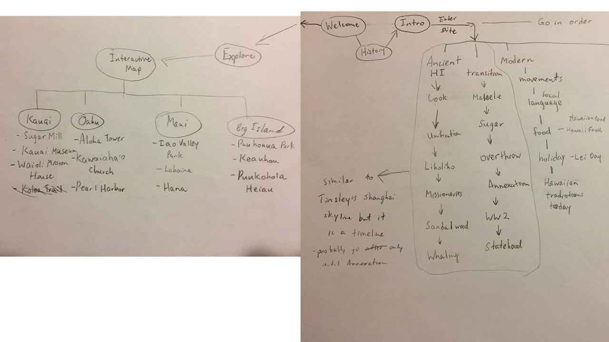

I have been thinking over the reactions towards to the two versions of my project. It just seems as if people are more interested in the tourists version of this project. I got irritated for a long time on it, which got me thinking. Are people more interested in going beyond the tourists bubble in Hawai'i? I often meet people saying, "I wish I lived in Hawai'i. It is so beautiful." In response, I would say multiple realities of Hawai'i such as one of my classmates having to prove that he is a part of the family in order to keep his house or the fact that a two bedroom house can cost over $50,000 while the average apartment in California may cost up to $4,000. Are people even interested in what was done in order to get Hawai'i into the US?
In response to the reactions I have received, I will create something akin to an experiment. The interface will still have a library as I will be using mapbox. The interface will have two sides of the coin. One side will tell about the history of Hawai'i, mainly about the overthrow and what is being done to Hawai'i today. The other side will be focused on historical places of Hawai'i, making the user think that they are actually learning about Hawai'i. In reality, these people will still be inside the tourist bubble.
